")
")

Zeichnen von Linien. Mit der Einstellung [oRiL] (ohne Richtungslogik) zeichnen Sie Linien in die Richtung, die Sie anklicken.
|
Tipp: |
|
In den Systemdaten können Sie das Zeichnen ohne Richtungslogik als Standard-Zeichenmodus einstellen. [Option | SysDat → Konstruktionsprogramm → Linien ohne Richtungslogik zeichnen]. |

Zeichenfunktionen
Unter der Abfrageleiste, im oberen linken Bereich der Programmoberfläche, finden Sie Optionen zum Zeichnen von Elementen. Mit den Zeichenfunktionen können Sie unterschiedliche Planelemente erstellen, die Ihnen als Grundlage für weitere Bearbeitungen dienen. Erstellen Sie z. B. Stützen, Durchbrüche und andere geometrische Elemente.
|


Zeichenmarke bewegen oder Linie zeichnen
Im Funktionsbereich können Sie mit den Schaltflächen [Bewege] oder [Zeichn] die Zeichenmarke an eine bestimmte Position bewegen oder direkt Linien zeichnen.
|
[Bewege] verschiebt die Zeichenmarke. [Zeichn] erzeugt Linien, wobei die Zeichenmarke an den Endpunkt der Linie gesetzt wird. Tipp: Zwischen Bewege und Zeichn können Sie mit der TAB-Taste umschalten. |


Linie zeichnen

1.Zeichenmarke platzieren
Die Zeichenmarke stellt den Koordinatenursprung x, y ( 0 / 0 ) dar. Wenn sich ein Element im Fangbereich befindet, können Sie für X und Y jeweils denselben oder einen anderen Punkt anklicken, um die Zeichenmarke zu platzieren. Gefunden werden Anfangs- oder Endpunkte von Linien und Teilkreisen, Mittelpunkte und Schnittpunkte. Für die Y-Angabe muss auch ein Punkt angeklickt werden, ansonsten wird die aktuelle Cursorposition genommen. Wenn die Linie an der Zeichenmarke beginnen soll, die Abfrage aber bereits Werte enthält, geben Sie für X und Y 0 (Null) ein.
Führen Sie einen der folgenden Schritte aus, um die Zeichenmarke zu platzieren. [von Punkt X]; [von Punkt Y].
a)Zeichenmarke frei platzieren:
Platzieren Sie die Zeichenmarke innerhalb der Zeichenfläche mit einem Linksklick.
-Die Y-Koordinate wird übersprungen.
-Wenn Sie die Zeichenmarke platziert haben, wechselt ISBCAD automatisch in den Zeichenmodus Zeichn.
-Durch ←Bst (Untere Menüleiste) oder Bewege (Funktionsbereich) können Sie nach dem Platzieren der Zeichenmarke einen neuen Startpunkt wählen.
b)Zeichenmarke mittels Koordinateneingabe platzieren:
Geben Sie die X- und Y-Koordinate ein und bestätigen Sie jeweils mit der Eingabetaste. Die Zeichenmarke springt an die angegebenen Koordinaten. Sie können auch negative Werte (mit Minuszeichen) eingeben.
c)Zeichenmarke an einen Linien-, Kreis- oder Hilfspunkt setzen:
Klicken Sie zwei Mal einen Anfangs-, Mittel- oder Endpunkt eines Zeichenelements an. Die Fangmarken-Darstellung unterstützt Sie bei der Auswahl des entsprechenden Elements.
2.Linie zeichnen
Führen Sie einen der folgenden Schritte aus, um die Linie zu zeichnen. [nach Punkt X]; [nach Punkt Y].
a)Linie frei zeichnen:
Klicken Sie eine beliebige freie Stelle auf der Zeichenfläche an.
b)Linie mittels Koordinateneingabe zeichnen:
Geben Sie die X- und Y-Koordinate des Endpunktes ein und bestätigen Sie jeweils mit der Eingabetaste.
c)Linie bis zu einem Fangpunkt zeichnen:
Bewegen Sie den Cursor an ein Zeichenelement. Je nachdem, an welcher Position sich der Cursor befindet, wird ein Punkt des Elements gefangen. Klicken Sie zwei Mal den gewünschten Punkt an, um die Linie bis zu diesem Punkt zu zeichnen.
Siehe auch: Zeichnen eines Grundrisses ohne Richtungslogik (Beispiel)
Rechteck über Diagonalpunkte konstruieren
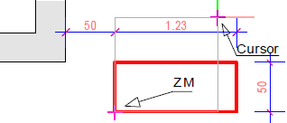 |
Von der Zeichenmarke (ZM) wird ein Rechteck zum Cursor aufgezogen. Sie können das Rechteck frei aufziehen und mit einem Linksklick zeichnen oder durch Angabe bestimmter Werte festlegen.
|
Rechteck von einem Mittelpunkt aus konstruieren
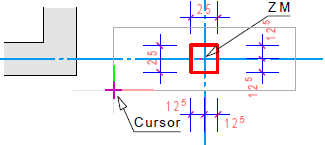 |
Von der Zeichenmarke (ZM) wird ein Rechteck zum Cursor aufgezogen, dessen Mittelpunkt an der Zeichenmarke liegt. Sie können das Rechteck frei aufziehen und mit einem Linksklick zeichnen oder durch Angabe bestimmter Werte festlegen.
|
Durchbruch zeichnen
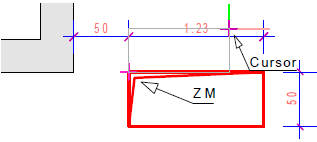 |
Wie "Rechteck über Diagonalpunkte konstruieren", nur dass zusätzlich ein "Schatten" gezeichnet wird.
|
Linie tangential zu einem Kreis zeichnen
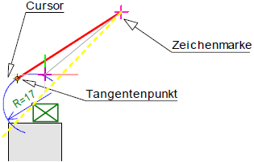 |
Setzen Sie die Zeichenmarke an eine beliebige Stelle und klicken Sie den Kreis an, zu dem von der Zeichenmarke eine tangentiale Linie gezeichnet werden soll. Die Lage am Kreis wird durch Anklicken auf der gewünschten Seite festgelegt (s. gelbe gestrichelte Linie).
|
Lot auf/von Linie zeichnen
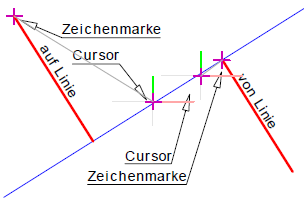 |
Lot auf Linie Von der Zeichenmarke aus wird das Lot auf die angeklickte Linie gefällt. Lot von Linie Die Zeichenmarke befindet sich auf einer Linie. Achten Sie beim Anklicken der Linie auf die Fangpunkte und darauf, auf welcher Seite sich der Cursor befindet. Daraus ergibt sich die Richtung. Geben Sie danach die Länge der lotrechten Linie an.
|
Lot auf/von Kreis zeichnen
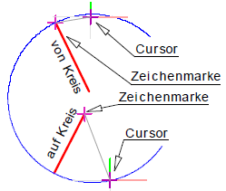 |
Lot auf Kreis Von der Zeichenmarke aus wird das Lot auf den angeklickten Kreis gefällt. Befindet sich die Zeichenmarke innerhalb des Kreises, sind zwei Lotlinien möglich. Klicken Sie auf den Kreisabschnitt, auf den das Lot gefällt werden soll. Lot von Kreis Die Zeichenmarke befindet sich auf dem Kreis. Wird die Länge mit einem negativen Vorzeichen angegebenen, wird die Lotlinie Richtung Mittelpunkt gezeichnet. Mit positivem Vorzeichen wird die Lotlinie vom Mittelpunkt weg gezeichnet.
|
Zeichnen eines Grundrisses ohne Richtungslogik (Beispiel)
Damit alle Eingaben nachvollziehbar sind, ist es empfehlenswert, eine neue Zeichnung anzulegen. Als Eingabeeinheit wird für die Beispielzeichnung m (Meter) eingestellt. [Option | Einste → Eingabeeinheit].
|

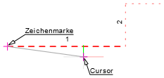 |
Bevor Sie mit dem eigentlichen Zeichen beginnen, müssen Sie zunächst die Zeichenmarke an den Startpunkt setzen. Tipp: Durch ←Bst (Untere Menüleiste) oder Bewege (Funktionsbereich) können Sie nach dem Platzieren der Zeichenmarke einen neuen Startpunkt wählen. [von Punkt X]; [von Punkt Y] §Bewegen Sie den Cursor an eine geeignete Stelle auf der Zeichnung und platzieren Sie die Zeichenmarke mit einem Linksklick. Falls mit dem Cursor ein Punkt gefangen wird, müssen Sie die X- und Y-Koordinate jeweils mit einem Linksklick bestätigen. [nach Punkt X]; [nach Punkt Y] §Geben Sie als X-Wert 5.5 ein und bestätigen Sie mit der Eingabetaste. [nach Punkt X]. §Bestätigen Sie den Y-Wert (Y = 0) ebenfalls mit der Eingabetaste. [nach Punkt Y]. Die Linie (1) wird gezeichnet. |
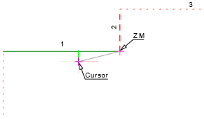 |
Zeichnen Sie die zweite und dritte Linie, ohne den Cursor zu bewegen. Im Eingabefeld für X steht der vorher eingegebene Wert. [nach Punkt X]; [nach Punkt Y] §Tippen Sie als X-Wert 0 und als Y-Wert 2 ein. Bestätigen Sie jeweils mit der Eingabetaste. Die Linie (2) wird gezeichnet. [nach Punkt X]; [nach Punkt Y] §Um die dritte Linie zu zeichnen, tippen Sie als X-Wert 6.865 und als Y-Wert 0 ein. Bestätigen Sie jeweils mit der Eingabetaste. Die Linie (3) wird gezeichnet. |
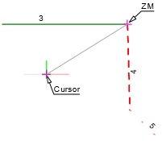 |
Bei Werten zwischen 0 und 1 können Sie z. B., anstatt 0.5 einfach .5 eintippen. Achten Sie auch darauf, die entsprechenden Vorzeichen einzugeben. [nach Punkt X]; [nach Punkt Y] §Tippen Sie als X-Wert .1 und als Y-Wert -3.5 ein. Bestätigen Sie jeweils mit der Eingabetaste. Die Linie (4) wird gezeichnet. |
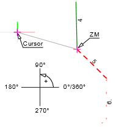 |
Die fünfte Linie soll mithilfe der Hilfsfunktion W [Winkel] gezeichnet werden, wobei ein Winkel von 315° eingegeben werden soll. Für den Betrag des Winkels sind mehrere Möglichkeiten vorhanden. Um einen Winkel von 315° einzugeben, können Sie folgende Schreibweisen verwenden:
[nach Punkt X]; [nach Punkt Y] §Tippen Sie in das X-Eingabefeld ein w ein und geben Sie als Betrag des Winkels 315 an. Bestätigen Sie die Eingabe mit der Eingabetaste. §Geben Sie als Y-Wert 2.2 ein. Bestätigen Sie ebenfalls mit der Eingabetaste. Die Linie (5) wird gezeichnet. [nach Punkt X]; [nach Punkt Y] §Um die sechste Linie zu zeichnen, geben Sie als X-Wert 0 und als Y-Wert -2.2 ein. Die Linie (6) wird gezeichnet. |
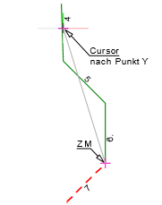 |
Bei der siebten Linie müssen Sie auf den Betrag des Winkels achten. Für den Schnittpunkt verwenden Sie die Hilfsfunktion S [Schnitt]. [nach Punkt X]; [nach Punkt Y] §Tippen Sie in das X-Eingabefeld ein w ein und geben Sie als Betrag des Winkels 225 an. Bestätigen Sie die Eingabe mit der Eingabetaste. Nun soll die siebte Linie gezeichnet werden, indem sie mit der vierten Linie, die gezeichnet worden ist, zum Schnitt gebracht wird. §Tippen Sie in das Y-Eingabefeld s ein und klicken Sie die Linie Nr. 4 an. Die Linie (7) wird gezeichnet. |
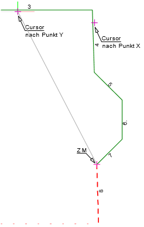 |
Die achte Linie soll sowohl im gleichen Winkel parallel zur Linie Nr. 4 als auch bis zu einer "gedachten" parallelen Linie gezeichnet werden. [nach Punkt X]; [nach Punkt Y] §Tippen Sie in das X-Eingabefeld ein p und klicken Sie die Linie Nr. 4 an. Die folgende Eingabe entspricht dem Schnittpunkt einer Parallelen zu Linie Nr. 4 im Abstand von 0m und einer Parallelen zu Linie Nr. 3 im Abstand von 12m. §Schalten Sie im Funktionsbereich den Differenzmodus [Retan] ein. §Tippen Sie ein s in die Eingabe. §Klicken Sie die Linie Nr. 3 an und geben Sie im Eingabefeld den Abstand -12 ein. Bestätigen Sie die Eingabe s3-12 mit der Eingabetaste. Die Linie (8) wird gezeichnet. Zeichnen der Linien Nr. 9 und 10. [nach Punkt X]; [nach Punkt Y] §Schalten Sie den Differenzmodus aus [Retaus]. §Klicken Sie die Linie Nr. 1 am Anfangspunkt an. In die Eingabe wird A1 (= Anfangspunkt der Linie Nr. 1) geschrieben. §Tippen Sie in die Y-Eingabe 0 ein und bestätigen Sie mit der Eingabetaste. Die Linie (9) wird gezeichnet. [nach Punkt X]; [nach Punkt Y] §Klicken Sie zweimal die Linie Nr. 1 am Anfangspunkt an. Die Linie (10) wird gezeichnet. Der Grundriss ist fertiggestellt. |
Siehe auch: